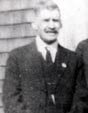
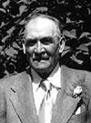
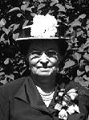

notre ancêtre de la 6ième génération
fiche familiale
 |
François-Xavier Baudoin Beaudoin décède à l'âge de 36 ans. Naissance en 1847 à Ste-Cécile-de-Masham (La Pêche) Dit Xavier Décès le 7 novembre 1883 à Ste-Cécile-de-Masham (La Pêche) Occupation: Cultivateur. Il vécu toute sa vie à Masham sur la terre du rang St-Luc, aujourd'hui "Chemin de la Prairie". Père:Julien-Jules Baudoin Mère: Angèle Galarneau (sa famille) Mariage le 26 mai 1868 à Ste-Cécile-de-Masham (La Pêche) Âge de l'époux 21 ans, âge de l'épouse 18 ans. Épouse: Marie-Clothilde Brazeau décède à l'âge de 63 ans. Naissance 20 avril 1850 à Ste-Cécile-de-Masham (La Pêche) Décès le 2 septembre 1913 à Ste-Cécile-de-Masham (La Pêche) Dite " Mathilde" Père: Isaïe Brazeau Mère: Magdeleine Racine (sa famille) |
|  |
Enfant 1 Xavier Baudoin Beaudoin décède à l'âge de 68 ans. Naissance le 10 juillet 1869 à Ste-Cécile-de-Masham (La Pêche) Décès 6 février 1938 à Ste-Cécile-de-Masham (La Pêche) Mariage le 28 avril 1891 à Ste-Cécile-de-Masham (La Pêche) Conjointe: Hedwige Martineau n. 31 jul 1874 d. 14 oct 1918. Père: Médard Martineau Mère: Caroline Martin (sa famille) |
   |
Enfant 2 Isaïe Baudoin Beaudoin décède à l'âge de 68 ans. Naissance le 3 mars 1871 à Ste-Cécile-de-Masham (La Pêche) Décès le 7 janvier 1940 à Ste-Cécile-de-Masham (La Pêche) Mariage le 26 avril 1893 à Ste-Cécile-de-Masham (La Pêche) 1ère conjointe: Catherine Renaud n. 15 juin 1872 d. 18 mars 1918. Père: Samuel-Anselme Renaud Mère: Ann-Eléonor O'Ryan (Ryan) Mariage le 18 octobre 1922 à Ste-Cécile-de-Masham (La Pêche) 2ème conjointe: Priscille Renaud n. 5 juin 1879 d. 7 décembre 1964. Père: Joseph Renaud Mère: Philonise Coderre (sa famille) |
Enfant 3 Clotilde-Adéline-Délia Baudoin Beaudoin
décède à l'âge de 79 ans.
Naissance le 12 décembre 1873 à Ste-Cécile-de-Masham (La Pêche)
Décès en 1953 à Ste-Cécile-de-Masham (La Pêche)
Mariage le 15 avril 1890 à Ste-Cécile-de-Masham (La Pêche)
1er conjoint: Jean Gosselin n. 18 fév 1867 d. en 1904.
Père: Simon Gosselin
Mère: Mathilde Bélair Latour
Mariage le 27 décembre 1913 à Notre-Dame-de-Grâce, Hull.
2ème conjoint: Hubert Vincent n. en 1866 d. en 1942.
Père: Alexis Vincent
Mère: Olivine Hudon
(sa famille)
-------------------------------------------------------------------------------
|   |
Enfant 4 Louis Beaudoin décède à l'âge de 78 ans. Naissance le 2 novembre 1875 à Ste-Cécile-de-Masham (La Pêche) Décès le 1 août 1954 à St-Laurent, Montréal. Mariage le 13 mai 1902 à Ste-Cécile-de-Masham (La Pêche) Conjointe: Albina Vaillancourt n. 22 février 1880 d. 2 juillet 1965 Père: Louis Vaillancourt Mère: Philomène Lamothe (sa famille) |
| Retour à la page des ancêtres | Page précédente | Page suivante | Début de la page | Page d'accueil |